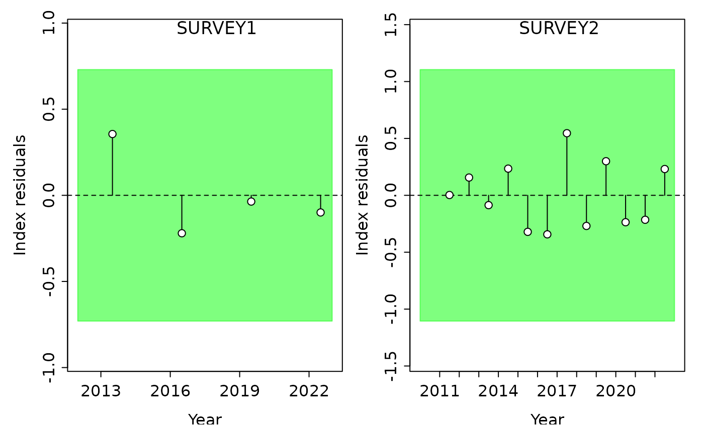
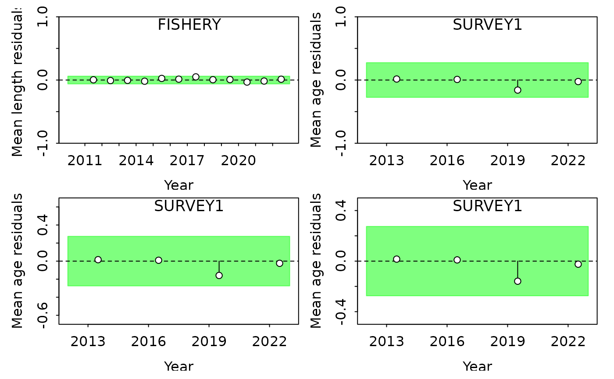
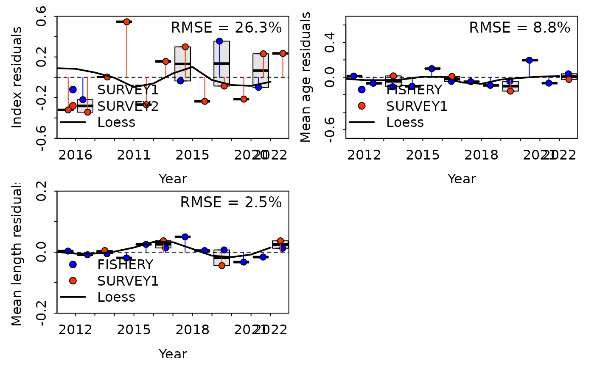

Within the ss3diags package, there are 2 main diagnostic
functions useful for residual analysis:
ss3diags::SSplotRunstest() and
ss3diags::SSplotJABBAres(). It is suggested to implement
these diagnostics early and often in the model development process to
gain a better understanding of how your model is fitting to your
data.
The runs test is a nonparametric hypothesis test for randomness in a data sequence that calculates the 2-sided p-value to estimate the number of runs (i.e., sequences of values of the same sign) above and below a reference value. The runs test can diagnose model misspecification using residuals from fits to index and composition data (Carvalho et al. 2017) by testing if there are non-random patterns in the residuals. In addition, the three-sigma limits can be considered useful for identifying potential outliers as any data point further than three standard deviations away from the expected residual process average would be unlikely given a random process error in the observed residual distribution.
For this example we will be using the “simple_small” SS model
included within the r4ss package. We can read in the report
file from the model output using the r4ss::SS_output()
function as shown below.
library(r4ss)
files_path <- system.file("extdata", "simple_small", package = "r4ss")
report <- SS_output(dir = files_path, verbose = FALSE, printstats = FALSE)
sspar(mfrow = c(1,2))
SSplotRunstest(report, add = TRUE)
#> Running Runs Test Diagnostics w/ plots forIndex
#> Plotting Residual Runs Tests
#> Residual Runs Test (/w plot) stats by Index:
#> Index runs.p test sigma3.lo sigma3.hi type
#> 1 SURVEY1 0.159 Passed -0.7301441 0.7301441 cpue
#> 2 SURVEY2 0.887 Passed -1.1052361 1.1052361 cpueThe output for SSplotRunstest() includes a plot of the
residuals by fleet and a table with the results from the runs test and
‘three-sigma limit’ values. In the plots below, the shaded area
represents the ‘three-sigma limit’, or three residual standard
deviations from zero. If any of the individual residual points fall
outside of the three-sigma limit, they are colored red. Green shaded
area indicates the residuals are randomly distributed (p-value >=
0.05) whereas red shaded area indicates the residuals are not randomly
distributed. Failing the runs test (p-value < 0.05) can be indicative
of some misspecification or conflict with the indices or composition
data.
Runs test plots can be customized, some common features that you may want to specify are:
To plot other data types, they can be specified with the
subplots argument, and the options include “cpue”, “len”,
“age”, “size”, or “con”. “con” is for conditional size-at-age data and
“size” is for generalized size composition data. Fleets can be specified
using the indexselect() function, which takes a vector of
the fleet numbers to plot.
sspar(mfrow = c(2,2))
SSplotRunstest(report, subplots = "len", indexselect = 1, add = TRUE)
#> Running Runs Test Diagnostics w/ plots forMean length
#> Plotting Residual Runs Tests
#> Residual Runs Test (/w plot) stats by Mean length:
#> Index runs.p test sigma3.lo sigma3.hi type
#> 1 FISHERY 0.126 Passed -0.0613176 0.0613176 len
SSplotRunstest(report, subplots = "age", indexselect = 2, add = TRUE)
#> Running Runs Test Diagnostics w/ plots forMean age
#> Plotting Residual Runs Tests
#> Residual Runs Test (/w plot) stats by Mean age:
#> Index runs.p test sigma3.lo sigma3.hi type
#> 1 SURVEY1 0.11 Passed -0.2743816 0.2743816 age
SSplotRunstest(report, subplots = "age", indexselect = 2, add = TRUE, ylim = c(-0.5, 0.5))
#> Running Runs Test Diagnostics w/ plots forMean age
#> Plotting Residual Runs Tests
#> Residual Runs Test (/w plot) stats by Mean age:
#> Index runs.p test sigma3.lo sigma3.hi type
#> 1 SURVEY1 0.11 Passed -0.2743816 0.2743816 age
SSplotRunstest(report, subplots = "age", indexselect = 2, add = TRUE, ylim = c(-0.5, 0.5), ylimAdj = 1)
#> Running Runs Test Diagnostics w/ plots forMean age
#> Plotting Residual Runs Tests
#> Residual Runs Test (/w plot) stats by Mean age:
#> Index runs.p test sigma3.lo sigma3.hi type
#> 1 SURVEY1 0.11 Passed -0.2743816 0.2743816 ageNote that a small adjustment is automatically added to the ylim to
provide extra white space. This is why in the third plot, even though we
set the y-axis to range from -0.5 to 0.5, the y-axis goes from -0.6 to
0.6. If you do not want the extra space, set ylimAdj = 1 as
done in the 4th plot.
In addition to the residual plots, SSplotRunstest()
produces a summary table of the runs test output values, including:
To only produce the summary table and skip the plot, e.g. to
faciliate automated processing, use SSrunstest().
rcpue <- SSrunstest(report, quants = "cpue")
#> Running Runs Test Diagnosics for Index
#> Computing Residual Runs Tests
#> Residual Runs Test stats by Index:
rlen <- SSrunstest(report, quants = "len")
#> Running Runs Test Diagnosics for Mean length
#> Computing Residual Runs Tests
#> Residual Runs Test stats by Mean length:
rbind(rcpue, rlen)
#> Index runs.p test sigma3.lo sigma3.hi type
#> 1 SURVEY1 0.159 Passed -0.7301441 0.7301441 cpue
#> 2 SURVEY2 0.887 Passed -1.1052361 1.1052361 cpue
#> 3 FISHERY 0.126 Passed -0.0613176 0.0613176 len
#> 4 SURVEY1 0.841 Passed -0.1725225 0.1725225 lenRMSE or root mean square error is useful for evaluating how far
predictions fall from the observed data. The
ss3diags::SSplotJABBAres() function allows you to visualize
the full time series of residuals for all fleets of the indicated data
(index of abundance or composition). In the example below, we plot the
residuals for index of abundance, mean age (age-composition), and mean
length (length composition) for both fleets.
sspar(mfrow = c(2,2))
SSplotJABBAres(report, subplots = "cpue", add = TRUE)
#> Plotting JABBA residual plot.
#> is plot TRUE? TRUE
#> drawing plot at
#> Plot exists:
#> RMSE stats by Index:
#> # A tibble: 3 × 3
#> Fleet RMSE.perc Nobs
#> <chr> <dbl> <int>
#> 1 SURVEY1 21.6 4
#> 2 SURVEY2 27.7 12
#> 3 Combined 26.3 16
SSplotJABBAres(report, subplots = "age", add = TRUE)
#> Plotting JABBA residual plot.
#> is plot TRUE? TRUE
#> drawing plot at
#> Plot exists:
#> RMSE stats by Index:
#> # A tibble: 3 × 3
#> Fleet RMSE.perc Nobs
#> <chr> <dbl> <int>
#> 1 FISHERY 9 12
#> 2 SURVEY1 8.1 4
#> 3 Combined 8.8 16
SSplotJABBAres(report, subplots = "len", add = TRUE, ylim = c(-0.2,0.2))
#> Plotting JABBA residual plot.
#> is plot TRUE? TRUE
#> drawing plot at
#> Plot exists:
#> RMSE stats by Index:
#> # A tibble: 3 × 3
#> Fleet RMSE.perc Nobs
#> <chr> <dbl> <int>
#> 1 FISHERY 2.1 12
#> 2 SURVEY1 3.4 4
#> 3 Combined 2.5 16
In the plots above, each point represents the difference between the observed and expected value (residual) and is color-coded to correspond to a specific fleet. The solid, color-coded vertical lines from the horizontal dashed line (at y = 0) show the distance between 0 and the residual value. Box plots summarize the spread of residual values across all fleets within each year and the thick solid black line is a loess smoother fit through all residual points. Total RMSE is displayed in the top right corner. When assessing this plot, it is important to see if there are any patterns or trends in the residuals, how large the overall RMSE is, and whether the data from different fleets generally agrees or conflicts with each other.